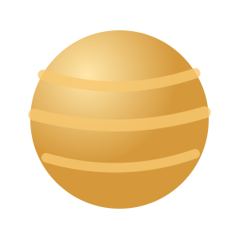
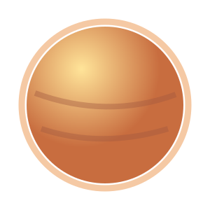
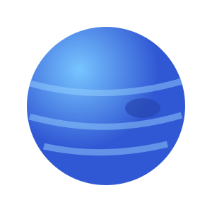

01
Mundo rocoso · Nivel inicial
Crónicas de Marte
Reconstruye las señales del agua antigua y selecciona el mejor punto de exploración.
Atlas de misiones Coordenadas abiertas
Explora nuestra selección de destinos y abre una bitácora diseñada para despertar tu curiosidad.
Reconstruye las señales del agua antigua y selecciona el mejor punto de exploración.

Investiga el hielo de Europa y las pistas que podrían revelar un océano profundo.

Analiza la estructura, el movimiento y los pequeños mundos que forman sus anillos.

Compara atmósferas y descubre por qué un planeta parecido a la Tierra evolucionó distinto.

Diseña una ruta entre dunas, nubes y mares de hidrocarburos en la luna más singular.

Estudia uno de los climas más extremos y distantes del sistema solar.
Selector de misión Recomendación
Responde dos preguntas y obtén una misión inicial.